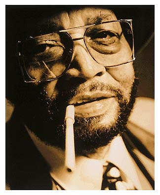
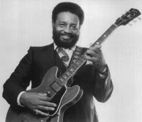

(31 марта 1921, Тулса, Оклахома - 6 марта 1999г., Лос-Анжелес, Калифорния)
 |
"С глубоким сожалением и ощущением невосполнимой утраты я пишу сообщить вам, что этим утром блюзмэн, гитарист, певец и композитор Лоуэлл Фулсон закончил свою долгую борьбу. Его тело истерзано болезнью почек, диабетом и острой сердечной недостаточностью, и его разум постепенно разрушался под воздействием медленной смерти от болезни Альцгеймера, так что я пытаюсь убедить себя, что все – к лучшему. Моя личная благодарность всем, кто в последние годы писал ему письма, присылал открытки, и присылал СиДи и кассеты, которые он слушал в больницах и санаториях. Всех вас я уверяю, что ваша забота и выражение сочувствия весьма помогли облегчить его страдания в эти тяжелые годы." Воскресенье, 7 марта 1999 года Мэри Кэтлин Алдин, блюзовый историк и теоретик,подготовившая в 1998 году издание “Полного собрания записей Лоуэлла Фулсона на фирме “Чесс”. |
Историю блюза можно расчертить как генеалогическое дерево. Люди, составляющие его ветви, частенько бывали и кровными родственниками. Но на деле родство их кроется глубже - на генетическом уровне, в их крови, в ДНК, в неопределенном наукой качестве души кроется некий блюзовый элемент, неизбежно заставляющий играть блюз.
В корнях техасского блюза рисуется мощная фигура певца-бродяги Алгера Александра, по прозвищу Техасский. От прочих блюзмэнов Тексас Александр отличался тем, что не умел играть ни на одном инструменте. Вербуя аккомпаниаторов, невольно в истории блюза Тексас Александр оказался эпицентром техасского блюза. Лайтнинг Хопкинсу он приходится старшим братом (двоюродным), а в 20-х и 30-х аккомпанировали ему все сливки блюза - от настоящих до будущих: Кинг Оливер и Лонни Джонсон, Фанни Папа Смит и Миссиссиппи Шейк, Хаулин Вулф… Один из тех, кого Тексас Александр инфицировал блюзом уже под занавес 30-х, – Лоуэлл Фулсон.
Так начало своей “карьеры” вспоминал Лоуэлл Фулсон в интервью Полу Тринке в 1994г. в своем доме в Лос-Анжелесе, одетый в импортный костюм, развалясь в шикарном кожаном кресле, прихлебывая кофе, по два золотых кольца на каждой руке, обращая на бубнящий политические новости телевизор королевских размеров внимания не больше, чем обращал на шум далекой плотины в своем городе детства. В этом поколении блюзмэнов, вышедшем из нищеты, оказалось немало сибаритов. Они любили авто и женщин, как и их предшественники, но в отличие от них, могли пользоваться лучшими моделями своего времени. Они сибаритствовали, но разделили общую блюзовую судьбу. И Лоуэлл Фулсон без горечи, а как данность, вспоминал свои главные житейские потери: как за пару сотен вынужден был продать бесценный “Гибсон Л-5”, как уступил авторские права на свой хит “THREE O’CLOCK BLUES” хитрому антрепренеру. Интервьюер говорит ему, что Эрик Клэптон записал самый популярный фулсоновский блюз “RECONSIDER BABY” - “Подумай еще раз, крошка” – и это, видимо, будет хит, который принесет солидную добавку на банковский счет Фулсона. Фулсон вполне умиротворенно хмыкает, но тут же спрашивает: “А что за чувак этот парень? Он может петь блюз?”
Рок-революция, расцвет и падение британского блюза могли пройти мимо его жизни.
Зато, как все блюзмэны, Лоуэлл Фулсон мог бы многое рассказать о правах человеках в Америке, о человеколюбии и стремлении к справедливости правительства США. “Знаешь, чего мне будет стоить прихлопнуть тебя? Медяк!” Медяк – цена одному патрону. Такая фраза, будучи услышана не в фильме, а в жизни, запоминается. Но, обращенная лично к тебе в чистом поле от шерифа местной полиции – она обретает особую весомость. Фулсону пришлось ответить: “Да, сэр. Понимаю, сэр.”
Лоуэлл Фулсон – один из первых, кто придал блюзу “шикарное” звучание. Но, как все блюзмэны, он играл музыку тех, кто борется за выживание каждый день.
Лоуэлл Фулсон родился 31 марта 1921года, в пригороде Тулсы, штат Оклахома. Он происходит из семьи, которой до Гражданской войны владели индейцы. В истории США были случаи, когда за земли с индейцами расплачивались африканцами. Взаимоотношения этих рабов и их владельцев были не вполне традиционными, и браки не были редкостью. Дед Фулсон, воевавший в гражданскую, был женат на индеанке. Дед играл на скрипке, и двое дядей Лоуэлла Фулсона играли на гитарах, и все женщины в большой семье пели. И на патефоне крутились пластинки Блайнд Лемона Джефферсона – праотца техасского блюза. И дети впитывали эту музыку буквально с молоком матери. В 17-18 лет Фулсон подыгрывал в заезжих оркестрах, а потом отправился странствовать с Тексасом Александром. Но он не был в душе бродягой – и вернулся, едва кончилось лето. Он зажил с женой в Техасе, работая на посудомойке. Как-то постепенно с мойки он перешел на кухню, и когда 9 сентября 1943 года его призвали в армию, он стал корабельным коком. Дембельнулся 5 декабря 1945 года, и обе эти даты – ухода в армию и возвращения на гражданку – засели в его памяти на всю жизнь. Морская база, куда он был приписан, располагалась в Оклэнде…
В конце 40-х Фулсон собирает небольшой оркестр с группой медных. Он играет блюз в новом стиле, первопроходцем которого выступал Ти-Боун Уокер. В группе Фулсона играет и практикуется в аранжировке молодой музыкант Рэй Чарлз. Три года спустя он “уведет” у Фулсона группу. Но блюзы Фулсона останутся в его репертуаре навсегда.
В 1950-м Фулсон совершил свой первый исторически важный шаг. Он записал песню Мемфиса Слима, которую сам автор называл “Никто меня не любит”. Фулсон дал ей принципиально новое название, под которым она обрела новую жизнь и вошла в сокровищницу блюзовых стандартов: “Каждый день со мною блюз” - “EVERYDAY I HAVE THE BLUES”. А для Фулсона это была первая песня в верхней пятерке ритмэндблюзового хит-парада Америки. Высшей отметки он достиг несколько месяцев спустя с собственной песней “Голубые тени” – “BLUE SHADOWS”.
В 1951-м Фулсон выступал в лучших залах Мемфиса с аншлагами. Выразить свои горячие восторгами к нему подошел диджей местной радиостанции Кинг, по прозвищу Блюзовый Мальчик, сокращенно – БиБиКинг.
Впрочем, в свое автобиографии Кинг пишет, что Лоуэлл сам предложил ему этот блюз – в подарок. Кинг в те времена рекламировал слабоалкогольный напиток “Пептикон”, который под видом “тоника” продавался в аптеках. Он дебютировал в записи еще за два года до этой встречи, и одна компания уже разорилась, выпуская его пластинки. (“Так я был плох”,- смеется теперь, вспоминая этот курьез, БиБиКинг). Песня Фулсона про блюз в три часа утра оказалась его первой ступенью на трон короля блюза: в 1951 в его исполнении “THREE O’CLOCK BLUES” на протяжении четырех месяцев возглавлял ритмэндблюзовый хит-парад. Блюзовый мальчик стал королем блюза, и неусыпно и беспрестанно прославлял Лоуэлла Фулсона, чьи песни и позже всегда приносили ему успех.
В 1954 Фулсон подписал контракт с лидирующей блюзовой фирмой того времени – с чикагской фирмой “Чесс”. Для этой фирмы в том году он записал свою знаменитейшую “Подумай еще раз, крошка”, и это именно по пути в студию на запись этой песни у него случился разговор с шерифом в чистом поле. Может быть, поэтому за словами ключевого куплета: “Одна нога ее – на запад, другая – на восток. А я – посередине, стараюсь изо всех сил” - ощущается гражданская героика, великоватая для подобного сюжета.

Неполная декада, когда его записи выходили на фирме “Чесс” - наиболее продуктивный период творчества Фулсона. Стилистически его записи отличаются от того, что называется “Чесс-саунд”. Это изысканные баллады в мягких тонах, в которых равновелико влияние блюзмэна Ти-Боун Уокера и крунера Нэта Кинга Коула. Обладая прекрасными вокальными данными, Фулсон артистично варьировал исполнительские стили, мог записать и беззубый твист, и истошный рок-н-ролл а-ля Литл Ричард. Гитара в этих записях частенько оказывалась на втором плане. Это обидно, поскольку редкие соло демонстрируют великолепное ощущение стиля и мелодики импровизации.В конце 60-х Фулсон стал записывать больше соул-баллад, как того требовала музыкальная мода, в 1970г. выпустил альбом, в котором пытался сыграть грязную битловскую рок-шизу под названием “Отчего бы нам ни устроить это прямо на дороге?”. Его популярность стала угасать, но он вернулся в блюз, гастролируя по клубам и фестивалям. Его альбомы 80-х и 90-х, записанные для небольших независимых блюзовых фирм, явственно доказывают, что блюзмэна ничем с пути не свернешь: ни модой, ни годами. Он продолжал выступать до последних дней, пока позволяло тело. Но душой он остается блюзмэном и сегодня – в памяти тех, кто любит его.
С течением лет две фигуры заслонили Лоуэлла Фулсона в глазах широкой публики: это его предшественник Ти-Боун Уокер и последователь БиБиКинг. Отчасти это, может быть, и справедливо. Но еще более справедливо напомнить, что Фулсон был ключевой фигурой в блюзовых исканиях и переменах середины столетия – революционной для жанра поры. Творчество Фулсона наглядно демонстрирует, насколько зыбки классификационные рамки в блюзе: он родился в Оклахоме, большую часть жизни прожил в Калифорнии, создавая стиль “уэст-коаст-блюза”, его лучшие записи изданы чикагской фирмой Чесс, но общепризнанно: Фулсон является представителем техасского стиля. Родным для него был кантри-блюз, но и в музыке и в стиле жизни он был представителем блюза городского.
Творческие достижения Фулсона подтверждены многочисленными премиями имени В.К.Хэнди, его имя внесено в символический Зал славы Блюза.
Многое остается в прошлом. Возможно, записи Фулсона для следующих блюзовых поколений будут иметь меньшую привлекательность по сравнению с более яркими и более последовательными его современниками. Но где-то с полдюжины его песен уже вышли в ранг “вечнозеленых стандартов блюза”, и это останется неизменно. “RECONSIDER BABY” в 60-х записывал Элвис Пресли, а в 90-х, в Москве – группа “CRY BABY”. Эрика Клэптон, “Салт-Эн-Пеппа”, Принц и Отис Рэддинг в разные годы исполняли и записывали песни Фулсона. Список же собственно блюзмэнов, включавших в свой репертуар одну из этих песен Фулсона: “RECONSIDER BABY”, “LOVE HER WITH A FEELING”, “TRAMP”, “BLUE SHADOWS” (а так же есть основания и “EVERYDAY I HAVE THE BLUES” считать отчасти песней Фулсона) – привести невозможно! Каждый из более-менее известных блюзмэнов за последние полвека исполнял их как свои.